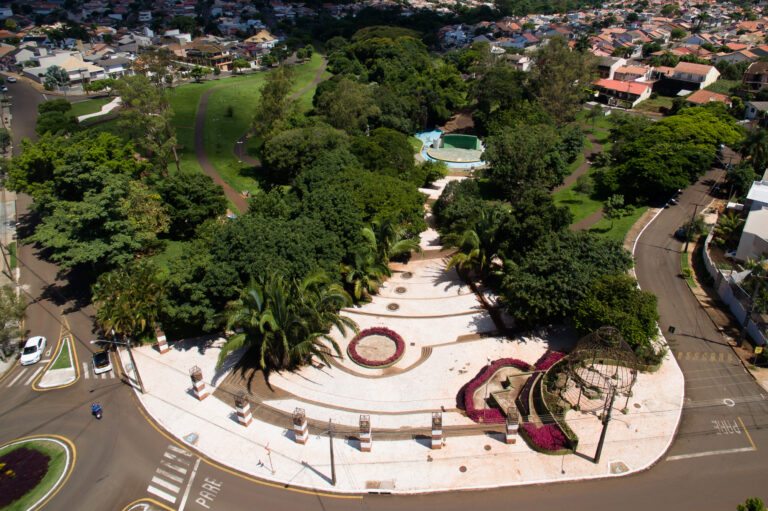
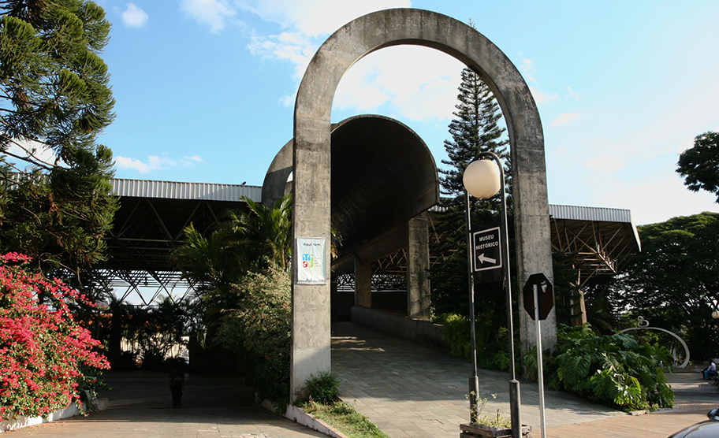

Locais Turísticos em Cambé
-
Parque Zezão
Zezão é um parque localizado no coração de Cambé e proximo a área urbana da cidade e fica apenas 500 metros de distância da igreja Matriz, é um otima parque para lazer e turismo, o Zezão possui espaço para praticar atividades físicas,possui brinquedos para crianças,uma pista para caminhar e andar de bicicleta, e um ótimo lugar para se divertir com a família como por exemplo em um piquenique já que no Zezão possui 50mil m² da vegetação de Cambé preservada, como também uma pequena nascente do Córrego Verdade passando pelo meio do Parque.
O Parque Zezão foi construido em 1997 e foi inaugurado em 2000, e ja teve diversos tipos de eventos no Zezão como shows,teatros,eventos de dança e músicas.
-
Museu Histórico Cambé
O Museu Histórico Cambé que fica localizado no Centro Cutural foi fundado em 1985,o Museu possui diversos projetos, documentação da cidade, além das Arqueologioa,Biblioteca, artes visuias,sons,imagens e histórias.
Dia Horário Segunda 8h ~ 16h Terça 8h ~ 16h Quarta 8h ~ 16h Quinta 8h ~ 16h Sexta 8h ~ 16 -
Parque Danziger Hof

O Parque Danziger Hof fica localizado na entrada do Bratislava área rural de Cambé, o Parque armazena grande parte da História de Cambé como a sua mata nativa, construções da primeira população que viveu em Cambé os emigrantes de Danzig, também no Parque está um Hotel que era considerado o melhor de toda região o Hotel Danziger Hof, o hotel ficava na mesma região que o Parque Danziger Hof por isso é considerado o marco zero de Cambé.
Na entrada do Parque da para ver duas casas que eram as casas dos pioneiros alemãs que morava naquela região,No "Museu Histórico de Cambé" diz que esses pioneiros alemãs veio para Cambé da diante proposta de um "Futuro promissor" que foi dito pela Companhia de Terras naquela epocá.
També no Parque Danziger Hof tem casas preservadas de duas famílias a casa da família Tkotz e da família Zfichak, que ficava naquela região mas foi transporta para o Parque por caminhões, essas casas são importantes para mostras como era a arquitetura naquela época
Dia Horário Sábado 9h ~ 17h